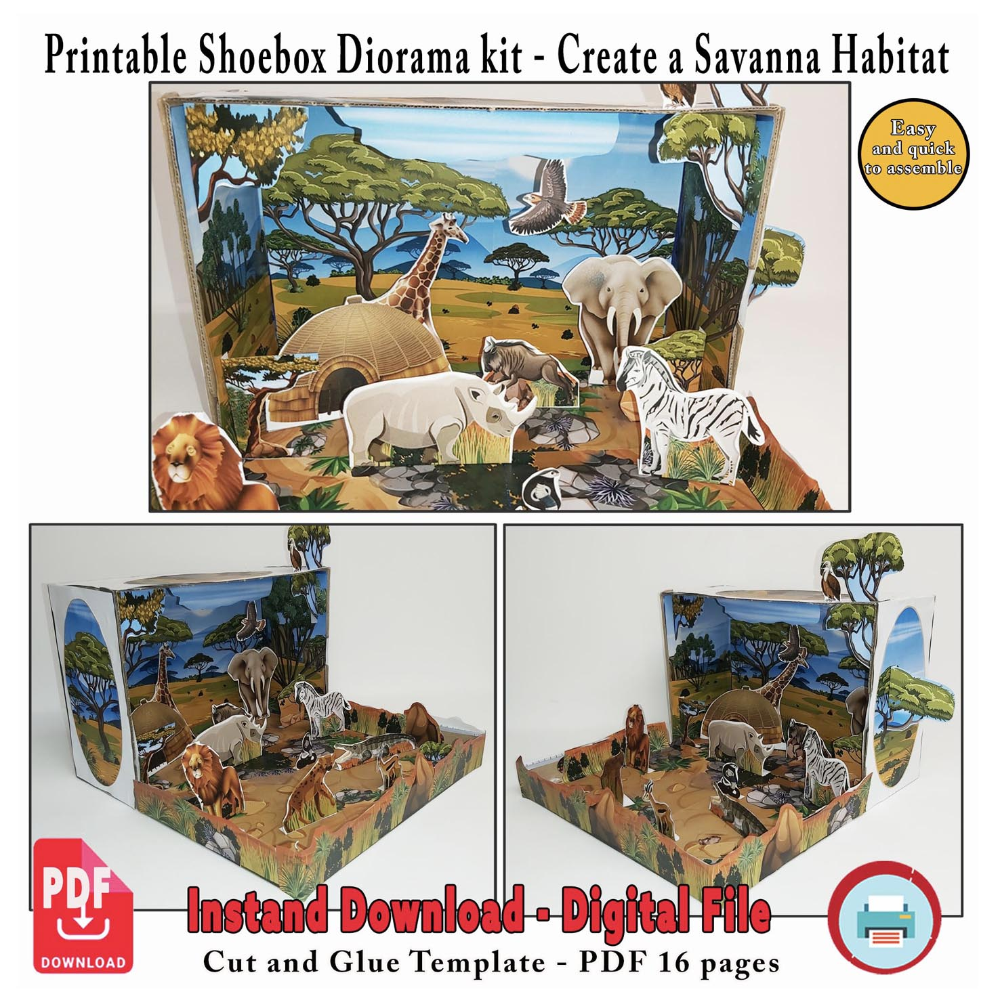

Maqueta de sabana 3D para niños
Convierte una caja de zapatos en una sabana llena de animales y paisaje africano. Este proyecto incluye 16 páginas a color para imprimir, recortar y construir paso a paso.
Una actividad creativa para proyectos escolares sobre la sabana, los hábitats, los animales y los ecosistemas.
Ver proyecto
Una maqueta de sabana lista para construir
Imprime las piezas y crea un paisaje de sabana con profundidad dentro de una caja de zapatos. Coloca los animales, árboles y demás elementos para construir tu propio ecosistema en 3D.




Aprende sobre la sabana mientras construyes
Construir una maqueta de sabana ayuda a observar cómo los animales, las plantas y el clima forman parte de un ecosistema y dependen unos de otros.
Paisaje de sabana
La sabana combina grandes extensiones de hierba con árboles dispersos. Las estaciones secas y lluviosas influyen en el paisaje y en la vida de sus animales.
Plantas y árboles
Hierbas, arbustos y árboles como las acacias ofrecen alimento y refugio y están adaptados a periodos con poca lluvia.
Animales de la sabana
Jirafas, elefantes, cebras, rinocerontes, leones y otros animales tienen distintas formas de encontrar alimento, agua y protección.
¿Qué incluye?
- 13 páginas a color.
- Fondos de paisaje de sabana para la caja.
- Animales de la sabana, árboles y otros elementos para recortar.
- Piezas que pueden colocarse en diferentes posiciones para crear profundidad.
- Archivo digital PDF para imprimir en casa.
Ideal para
- Proyectos escolares sobre ecosistemas y hábitats.
- Actividades sobre la sabana y los animales africanos.
- Manualidades de papel para niños.
- Aprender sobre animales, plantas y ecosistemas de la sabana.
- Familias que buscan una base sencilla para empezar un proyecto escolar.
¿Cómo se construye?
Solo necesitas una impresora, papel, tijeras, pegamento y una caja de zapatos o una caja de cartón similar.
¿Quieres construir tu propia maqueta de sabana?
El proyecto es una descarga digital en PDF. Después de la compra podrás imprimir las páginas y empezar a construir.
La compra directa en Maquetas de Papel se añadirá próximamente.
Ver todas las maquetas